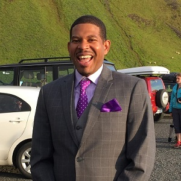

About Me
I am a fairly new implant into the world of Software Development. I entered as a QA Engineer after having spent many years in coffee shop management. At the start of my career as a tester I was mainly tasked with writing and executing manual tests. As time went by the need for automated tests grew, so we began write e2e tests using Protractor for our Angular development. My passion for learning led me to join the UNC Code Bootcamp in order to grasp a better understanding of the basic of programming.
When I'm not busy learning more about Full Stack Developemnt my son (currently 6 months) manages to keep me plenty busy. As he gets older I look forward to introducing him to some of my beloved hobbies, such as fishing, video games, basketball, gardening, and hopefully one day coding.